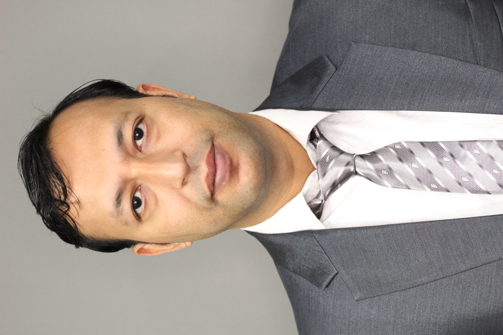

Utsab Acharya
PhD Student in Biomedical Engineering | Physicist | Data Analyst
Hello, and welcome to my website. My name is Utsab Acharya, and I am currently a PhD student in Biomedical Engineering at the University of Mississippi. I have an academic background in physics, and my research interests connect biomechanics, computational modeling, biomedical acoustics, and data analysis.
At present, I am working in the Vision Laboratory at the University of Mississippi under the supervision of Dr. Yi Hua. My current research focuses on ocular biomechanics, especially the deformation of the sclera and optic nerve head in relation to myopia progression. I am particularly interested in computational modeling and inverse finite element analysis to better understand the mechanical behavior of soft ocular tissues.
My work involves the use of tools such as SolidWorks, ABAQUS, Gmsh, and FEBio Studio/Solver. In addition to biomechanics, I also have research experience in biomedical acoustics, ultrasound-based studies, and computational physics. Through my academic journey, I have developed strong interests in interdisciplinary research that brings together physics, engineering, biology, and data-driven methods.
This website presents an overview of my academic background, curriculum vitae, community outreach, research papers, and selected photographs from my professional and academic activities.
